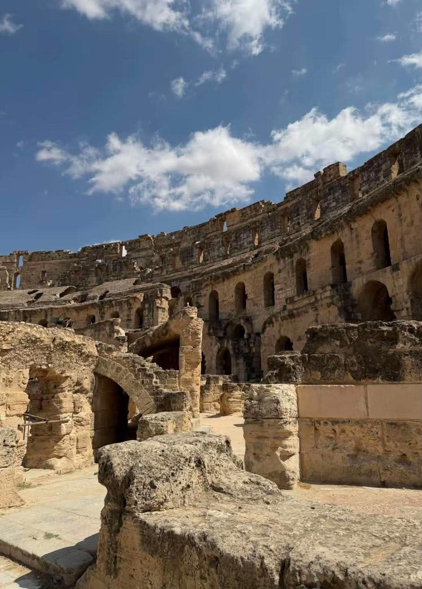

Riche grâce à l’huile d’olive, Thysdrus est l’une des grandes villes de l’Afrique romaine. C’est ici qu’en 238, Gordien Ier est proclamé empereur, avant que la ville ne devienne l’actuelle El Jem, dans le gouvernorat de Mahdia.
📍 Voir la localisationBâti vers 238 après J.-C., l’amphithéâtre d’El Jem pouvait accueillir des dizaines de milliers de spectateurs. C’est l’un des plus grands et des mieux conservés du monde romain, après le Colisée de Rome.
Construit en gros blocs de pierre sur trois niveaux d’arcades, il accueillait combats de gladiateurs et jeux. Ses galeries et ses souterrains sont encore visibles aujourd’hui.

L’amphithéâtre d’El Jem est inscrit à l’UNESCO depuis 1979.